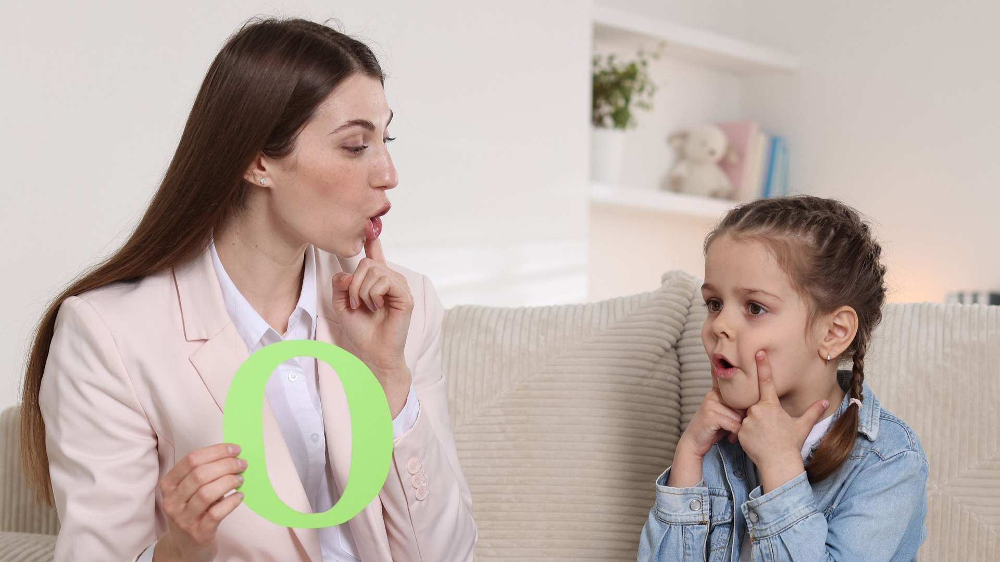
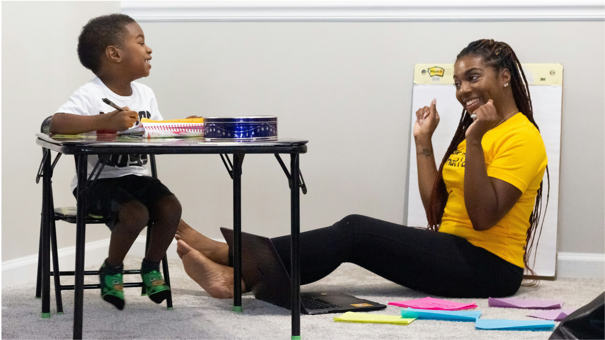
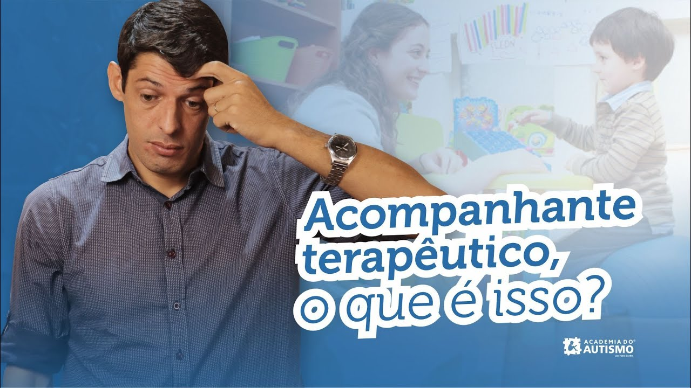
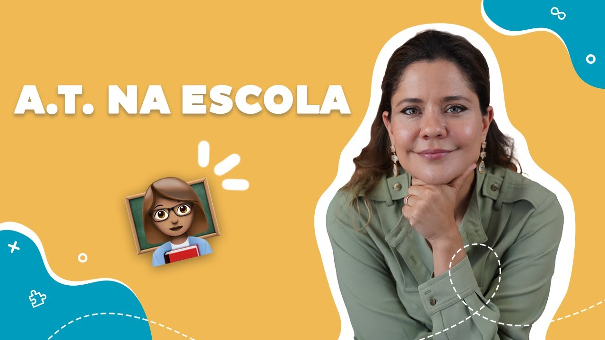

Acompanhamento terapêutico e inclusão escolar
Estudo sobre a atuação do acompanhante especializado e sua contribuição para a inclusão do aluno autista.
Abrir
Estudo sobre a atuação do acompanhante especializado e sua contribuição para a inclusão do aluno autista.
AbrirDiscussão sobre práticas de acompanhamento e os desafios encontrados no processo de inclusão escolar.
AbrirEstudo sobre o acompanhamento terapêutico como estratégia de intervenção no desenvolvimento da criança com TEA.
AbrirReflexões sobre comportamento, comunicação e autonomia de adolescentes com Transtorno do Espectro Autista.
Abrir
Relato sobre a atuação do AT na escola, destacando aprendizagem, interação social e inclusão.
AbrirRelato sobre o acompanhamento terapêutico e a construção de uma rotina mais organizada e segura.
AbrirPesquisa publicada na USP que relata uma experiência de acompanhamento terapêutico escolar com uma criança autista ao longo de três anos e meio, analisando impactos no desenvolvimento e na inclusão.
Ler artigo completo
▶Academia do Autismo
Academia do Autismo

▶Mayra Gaiato | Desenvolvimento Infantil e Autismo
Conhecimento também é uma forma de cuidar. Reunimos instituições brasileiras de referência para ajudar você a encontrar informações confiáveis sobre TEA, desenvolvimento infantil e inclusão.
Informações oficiais sobre TEA, cuidados, acompanhamento e serviços do SUS.
Publicações e documentos técnicos sobre saúde e Transtorno do Espectro Autista.
Informações sobre educação especial, inclusão escolar e estudantes com TEA.
Pesquisas e conteúdos científicos relacionados à saúde e ao desenvolvimento.
Pesquisas acadêmicas sobre autismo, desenvolvimento infantil e saúde.
Pesquisas científicas sobre aspectos genéticos e biológicos relacionados ao TEA.